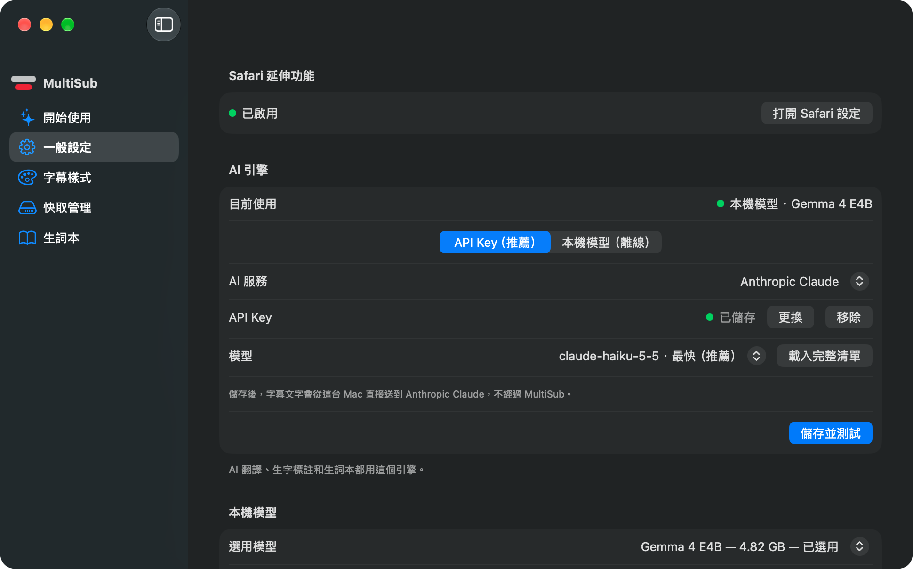
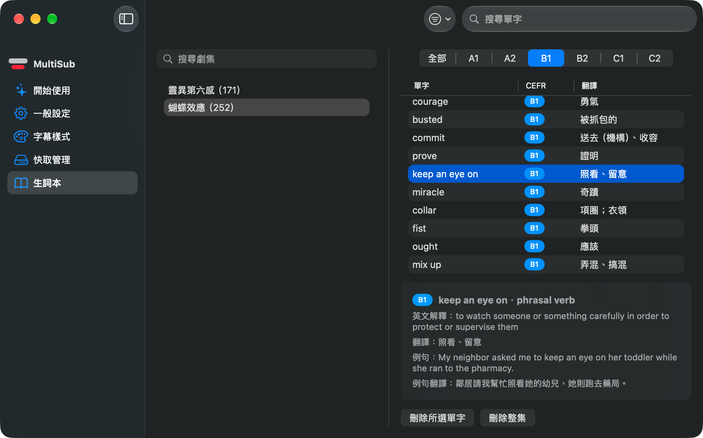
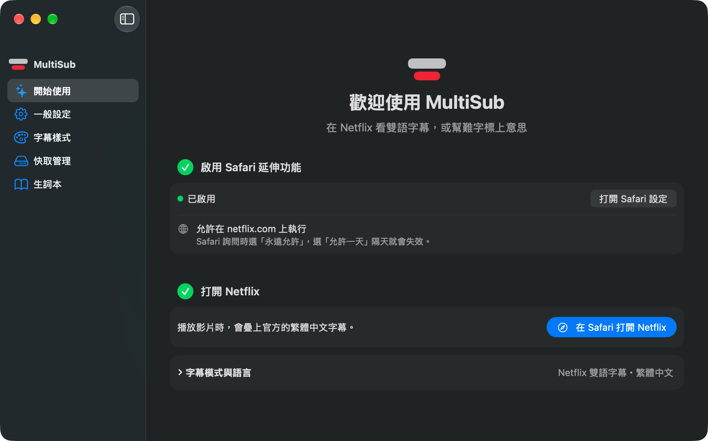
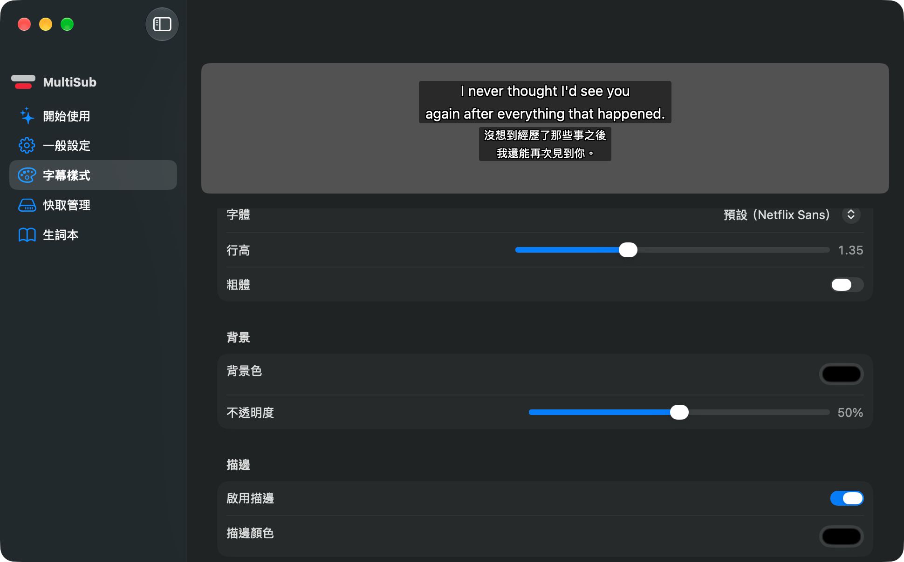

<!doctype html>
<html lang="zh-Hant">
<head>
<meta charset="utf-8">
<!--
  Mac App Store screenshot template. Rendered at 1440×900 CSS px with a 2×
  device scale (2880×1800 PNG) by render.sh: shot.html?id=<n>&lang=<zh|en>.
  Subtitle overlays use the extension's real overlay.css; app and popup
  images are real captures in ./assets. Backdrops are CSS-only (scenes.css),
  so no third-party footage appears.
-->
<link rel="stylesheet" href="scenes.css">
<link rel="stylesheet" href="../../../extension/overlay.css">
<style>
  :root {
    --bg: #0d0d0f; --text: #f5f5f7; --muted: #a1a1aa; --brand: #ff3b46;
    --font: -apple-system, BlinkMacSystemFont, "SF Pro Display", "PingFang TC", sans-serif;
  }
  html, body { margin: 0; width: 1440px; height: 900px; overflow: hidden; background: var(--bg); }
  body {
    font-family: var(--font); color: var(--text); position: relative;
    /* Same surface as the official site (--bg-top → --bg). */
    background: linear-gradient(180deg, #1b1b1f 0%, #0d0d0f 100%);
  }
  header { position: absolute; top: 58px; left: 0; right: 0; text-align: center; }
  h1 { margin: 0; font-size: 58px; line-height: 1.12; font-weight: 800; letter-spacing: -.5px; }
  h1 em { font-style: normal; color: var(--brand); }
  header p { margin: 14px 0 0; font-size: 23px; color: var(--muted); font-weight: 500; }

  /* Safari-style window, no hardware bezel. */
  .window {
    position: absolute; left: 50%; top: 236px; width: 1180px; height: 664px;
    transform: translateX(-50%); border-radius: 14px 14px 0 0; overflow: hidden;
    background: #1c1c1e; box-shadow: 0 30px 80px rgba(0,0,0,.6), 0 0 0 1px rgba(255,255,255,.08);
  }
  .toolbar { height: 48px; display: flex; align-items: center; gap: 14px; padding: 0 16px;
    background: #2a2a2d; border-bottom: 1px solid rgba(0,0,0,.5); }
  .lights { display: flex; gap: 8px; }
  .lights i { width: 12px; height: 12px; border-radius: 50%; display: block; }
  .lights i:nth-child(1) { background: #ff5f57; } .lights i:nth-child(2) { background: #febc2e; } .lights i:nth-child(3) { background: #28c840; }
  .address { flex: 1; max-width: 520px; margin: 0 auto; height: 30px; border-radius: 8px; background: #3a3a3d;
    display: flex; align-items: center; justify-content: center; gap: 6px; color: #b8b8be; font-size: 13px; }
  .address svg { width: 11px; height: 11px; fill: #b8b8be; }
  .ext-btn { width: 30px; height: 30px; border-radius: 7px; display: grid; place-items: center; }
  .ext-btn.active { background: rgba(255,255,255,.14); }
  .ext-btn svg { width: 18px; height: 18px; }
  .viewport { position: absolute; top: 49px; left: 0; right: 0; bottom: 0; }
  /* overlay.css positions #multisub-overlay inside the player box */
  .player { position: absolute; inset: 0; }
  /* First line 30px at this 1440px-wide render (overlay.css sizes it
     2.4vw × font scale, 2.4vw = 34.56px), so the second line keeps
     overlay.css's proportion to it (80% while both lines show). */
  .player #multisub-overlay { --multisub-font-scale: calc(30 / 34.56); }
  .player #multisub-text, .player #multisub-original { display: flex; }
  .timebar { position: absolute; left: 32px; right: 32px; bottom: 22px; height: 4px; border-radius: 2px; background: rgba(255,255,255,.25); }
  .timebar::before { content: ""; position: absolute; left: 0; top: 0; bottom: 0; width: var(--progress, 38%); background: #f5f5f7; border-radius: 2px; }

  .popup { position: absolute; top: 46px; right: 10px; width: 340px; border-radius: 12px; overflow: hidden;
    box-shadow: 0 20px 50px rgba(0,0,0,.55), 0 0 0 1px rgba(255,255,255,.12); background: #1f1f22; }
  .popup img, .popup iframe { display: block; width: 100%; border: 0; }

  /* Full app window captures (host app screens). */
  .appshot { position: absolute; left: 50%; top: 232px; transform: translateX(-50%); max-width: 1220px; max-height: 650px; }
  .appshot img { display: block; max-width: 1220px; max-height: 650px; border-radius: 12px; }
  .badge { display: inline-block; margin-left: 10px; padding: 3px 10px; border-radius: 999px; font-size: 15px;
    font-weight: 700; color: #111; background: #ffd76a; vertical-align: middle; }
</style>
</head>
<body>
<header><h1 id="title"></h1><p id="sub"></p></header>
<main id="stage"></main>

<script>
const params = new URLSearchParams(location.search);
const ID = params.get('id') || '1';
const LANG = params.get('lang') || 'zh';

// The extension's real toolbar icon (extension/toolbar-icon.svg). Safari
// draws it as a single-color template image, so it gets the toolbar's tint.
const LOGO = '<svg viewBox="0 0 16 16" fill="#d6d6db"><rect x="1" y="3.5" width="14" height="4.25" rx="1.6"/><rect x="3.25" y="9.25" width="9.5" height="3.75" rx="1.5"/></svg>';
const LOCK = '<svg viewBox="0 0 16 16"><path d="M4 7V5a4 4 0 1 1 8 0v2h1v8H3V7h1zm2 0h4V5a2 2 0 1 0-4 0v2z"/></svg>';

const SCENES = {
  cafe: '<i class="t"></i><i class="l1"></i><i class="l2"></i><i class="l3"></i><i class="l4"></i><i class="l5"></i><i class="p1"></i><i class="p2"></i>',
  street: '<i class="t"></i><i class="l1"></i><i class="l2"></i><i class="l3"></i><i class="l4"></i><i class="l5"></i><i class="p1"></i>',
  room: '<i class="l1"></i><i class="l2"></i><i class="l3"></i><i class="p1"></i><i class="p2"></i>',
};

// Overlay DOM mirrors what content.js renders (#multisub-original above
// #multisub-text, one .ms-line per subtitle line; annotate mode's single
// line is #multisub-text). With both lines, the overlay gets the class
// content.js's render() sets then, which is what makes overlay.css draw the
// second line smaller.
function overlay({ original, translation, annotated }) {
  const line = (t) => `<div class="ms-line">${t}</div>`;
  const twoLines = !!(original && translation);
  let html = `<div id="multisub-overlay"${twoLines ? ' class="multisub-two-lines"' : ''}>`;
  if (original) html += `<div id="multisub-original">${original.map(line).join('')}</div>`;
  if (translation) html += `<div id="multisub-text">${translation.map(line).join('')}</div>`;
  if (annotated) html += `<div id="multisub-text">${annotated.map(line).join('')}</div>`;
  return html + '</div>';
}
const g = (term, gloss) => `<span class="ms-term">${term}</span><span class="ms-gloss">${gloss}</span>`;

function browserWindow({ scene, subs, popup, progress }) {
  return `<div class="window">
    <div class="toolbar"><div class="lights"><i></i><i></i><i></i></div>
      <div class="address">${LOCK}<span>${LANG === 'zh' ? '正在播放' : 'Now playing'}</span></div>
      <div class="ext-btn ${popup ? 'active' : ''}">${LOGO}</div></div>
    <div class="viewport"><div class="player">
      <div class="scene ${scene}">${SCENES[scene]}</div>
      ${overlay(subs)}
      <div class="timebar" style="--progress:${progress || '38%'}"></div>
    </div>${popup ? `<div class="popup"></div>` : ''}</div>
  </div>`;
}

const SHOTS = {
  1: {
    zh: ['看劇時，<em>兩種語言</em>一起看懂', 'Safari 上的 Netflix 雙語字幕，打開就有'],
    en: ['Watch in <em>two languages</em> at once', 'Bilingual Netflix subtitles in Safari, ready when you are'],
    body: () => browserWindow({ scene: 'cafe', subs: {
      original: ["You're telling me the whole deal fell through?"],
      translation: ['你是說整筆交易都告吹了？'] } }),
  },
  2: {
    zh: ['只標<em>你不會的字</em>', '生字標註依你的程度挑字，意思貼合這句台詞'],
    en: ['Notes on <em>only the words you need</em>', 'Word Notes picks words for your level, with meanings that fit the scene'],
    body: () => browserWindow({ scene: 'street', progress: '61%', subs: {
      annotated: LANG === 'zh'
        ? [`We need to ${g('come up with', '想出')} a plan`, `before the whole deal ${g('falls through', '告吹')}.`]
        : [`We need to ${g('come up with', 'think of')} a plan`, `before the whole deal ${g('falls through', 'fails')}.`] } }),
  },
  3: {
    zh: ['三種模式，<em>選一次就記住</em>', 'Netflix 官方字幕、AI 翻譯、生字標註，隨時切換'],
    en: ['Three modes, <em>set once</em>', 'Netflix subtitles, AI translation or Word Notes — switch any time'],
    body: () => browserWindow({ scene: 'room', popup: 'assets/popup-netflix.png', progress: '22%', subs: {
      original: ['Don’t be so hard on yourself.'], translation: ['別對自己那麼嚴苛。'] } }),
  },
  4: {
    zh: ['用自己的 API Key，<em>或完全離線</em>', 'Claude、GPT、Gemini、OpenRouter，或在 Mac 上跑的本機模型'],
    en: ['Your own API key, <em>or fully offline</em>', 'Claude, GPT, Gemini, OpenRouter, or an on-device model'],
    body: () => `<div class="appshot"></div>`,
  },
  5: {
    zh: ['看完一集，<em>生詞本</em>也整理好了', '從整集英文字幕挑出值得學的字，依 CEFR 分級，附英文解釋、翻譯和例句'],
    en: ['Finish an episode, <em>keep the words</em>', 'English words worth learning from the episode, sorted by CEFR level, with English definitions, translations and examples'],
    body: () => `<div class="appshot"></div>`,
  },
  6: {
    zh: ['兩個步驟，<em>馬上開始</em>', '在 Safari 啟用延伸功能，打開 Netflix 就有雙語字幕'],
    en: ['Two steps and <em>you’re watching</em>', 'Turn on the extension in Safari, open Netflix, press play'],
    body: () => `<div class="appshot"></div>`,
  },
  7: {
    zh: ['字幕樣式，<em>隨你調整</em>', '顏色、字體、背景、描邊都能調，位置也能直接在影片上拖曳'],
    en: ['Subtitles, <em>your way</em>', 'Color, font, background and outline, and drag the subtitle into place on the video'],
    body: () => `<div class="appshot"></div>`,
  },
};

const shot = SHOTS[ID];
document.documentElement.lang = LANG === 'zh' ? 'zh-Hant' : 'en';
document.getElementById('title').innerHTML = shot[LANG][0];
document.getElementById('sub').textContent = shot[LANG][1];
document.getElementById('stage').innerHTML = shot.body();
</script>
</body>
</html>
